8 Gauss-Modelle

8.1 Lernsteuerung
8.1.1 Lernziele
Nach Absolvieren des jeweiligen Kapitels sollen folgende Lernziele erreicht sein.
Sie können …
- ein Gaußmodell spezifizieren und in R berechnen
- an Beispielen verdeutlichen, wie sich eine vage bzw. eine informationsreiche Priori-Verteilung auf die Posteriori-Verteilung auswirkt
8.1.2 Benötigte R-Pakete
Für rstanarm wird ggf. weitere Software benötigt.
Software, und das sind R-Pakete, müssen Sie nur einmalig installieren. Aber bei jedem Start von R bzw. RStudio müssen Sie die (benötigten!) Pakete starten.
8.1.3 Begleitvideos
8.2 Wie groß sind die !Kung San?
Dieser Abschnitt basiert auf McElreath (2020), Kap. 4.3.
8.2.1 !Kung San
In diesem Abschnitt untersuchen wir eine Forschungsfrage in Zusammenhang mit dem Volk der !Kung, s. Abbildung 8.1.
The ǃKung are one of the San peoples who live mostly on the western edge of the Kalahari desert, Ovamboland (northern Namibia and southern Angola), and Botswana.The names ǃKung (ǃXun) and Ju are variant words for ‘people’, preferred by different ǃKung groups. This band level society used traditional methods of hunting and gathering for subsistence up until the 1970s. Today, the great majority of ǃKung people live in the villages of Bantu pastoralists and European ranchers.

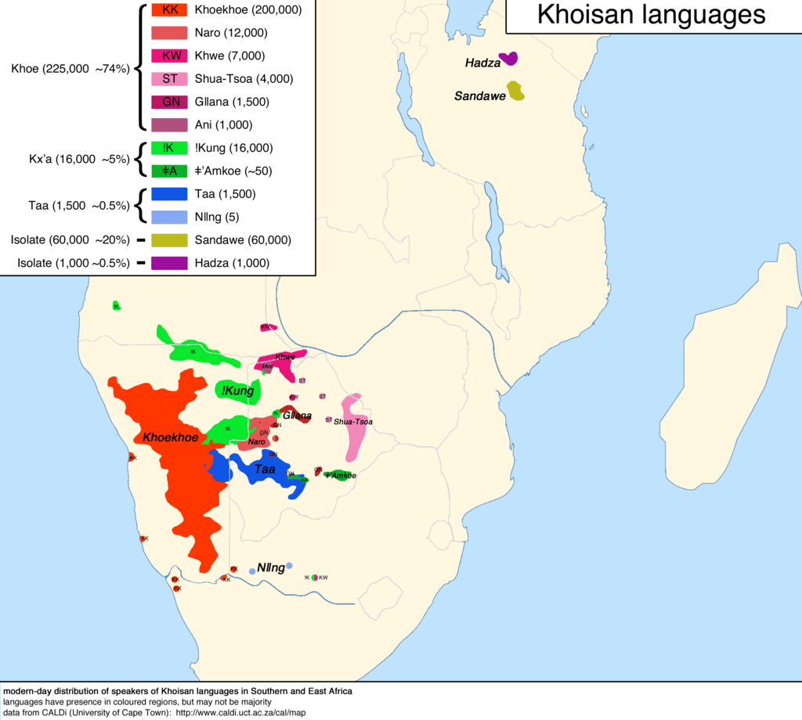
Quelle: Internet Archive Book Images, No restrictions, via Wikimedia Commons
{kind=link}
8.2.2 !Kung Data
Zuerst laden wir die Daten; Quelle der Daten ist McElreath (2020) mit Bezug auf Howell.
Code
Kung_path <-
"https://raw.githubusercontent.com/sebastiansauer/Lehre/main/data/Howell1a.csv"
d <- data_read(Kung_path) # aus dem Paket `easystats`
head(d)| height | weight | age | male |
|---|---|---|---|
| 151.765 | 47.82561 | 63 | 1 |
| 139.700 | 36.48581 | 63 | 0 |
| 136.525 | 31.86484 | 65 | 0 |
| 156.845 | 53.04191 | 41 | 1 |
| 145.415 | 41.27687 | 51 | 0 |
| 163.830 | 62.99259 | 35 | 1 |
Wir interessieren uns für die Größe der erwachsenen !Kung, also filtern wir die Daten entsprechend und speichern die neue Tabelle als d2.
\(N=352\).
Lassen wir uns einige typische deskriptive Statistiken zum Datensatz ausgeben. {easystats} macht das tatsächlich recht easy.
Code
describe_distribution(d2)| Variable | Mean | SD | IQR | Min | Max | Skewness | Kurtosis | n | n_Missing |
|---|---|---|---|---|---|---|---|---|---|
| height | 154.60 | 7.74 | 12.06 | 136.53 | 179.07 | 0.15 | −0.48 | 352.00 | 0 |
| weight | 44.99 | 6.46 | 9.19 | 31.07 | 62.99 | 0.13 | −0.51 | 352.00 | 0 |
| age | 41.14 | 15.97 | 23.00 | 18.00 | 88.00 | 0.67 | −0.21 | 352.00 | 0 |
| male | 0.47 | 0.50 | 1.00 | 0.00 | 1.00 | 0.13 | −2.00 | 352.00 | 0 |
8.2.3 Wir gehen apriori von normalverteilter Größe Der !Kung aus
Forschungsfrage: Wie groß sind die erwachsenen !Kung im Durchschnitt?
Wir interessieren uns also für den Mittelwert der Körpergröße (erwachsener Kung beider Geschlechter), \(\mu\).

Wir sind uns über diesen Mittelwert nicht sicher1, und unsere Ungewissheit quantifizieren wir anhand einer Normalverteilung mit Mittelwert von 178cm und Streuung von 20 cm:
\[\mu \sim \mathcal{N}(178, 20)\]
Warum 178 cm? Kein besonderer Grund. Hier wollen wir den Effekt verschiedener Priori-Werte untersuchen.2 In einer echten Untersuchung sollte man immer einen inhaltlichen Grund für einen Priori-Wert haben. Oder man wählt “schwach informative” Prioris, wie das rstanarm tut: Damit lässt man kaum Vorab-Information in das Modell einfließen, aber man verhindert extreme Prioris, die meistens unsinnig sind (so wie eine SD von 100 Metern in diesem Fall).
Wir haben zwar vorab nicht viel Wissen, aber auch nicht gar keines: Eine Gleichverteilung der Körpergrößen kommt nicht in Frage und ein vages Wissen zum Mittelwert haben wir auch. Darüber hinaus ist eine Normalverteilung nicht unplausibel.
8.3 Die Exponentialverteilung
8.3.1 Die Apfel-fällt-nicht-weit-vom-Stamm-Verteilung
Darf ich vorstellen …
Bevor wir unser Kung-Modell spezifizieren können, sollten wir noch überlegen, welches Vorab-Wissen wir zur Streuung um den Mittelwert herum haben. Da wir uns nicht 100% sicher zur gesuchten Größe sind, müssen wir angeben, wie groß die Streuung um den Mittelwert sein soll. Hier werden wir eingestehen, dass wir uns auch nicht 100% sicher sind, wie groß die Streuung exakt ist. Also geben wir eine Verteilung für die Streuung an.
Etwas Wissen über diese Verteilung haben wir:
- Eine Streuung muss positiv sein (es gibt keine negative Streuung).
- Eine Gleichverteilung der Streuung ist vielleicht möglich, aber nicht sehr plausibel.
- Wenn wir der Meinung sind, der Mittelwert betrage “ungefähr 178cm”, so halten wir 180cm für plausibel, aber 18000 cm für unmöglich und schon 200 für sehr unplausibel. Also: Je größer die die Abweichung vom Mittelwert desto unplausibler.
Diese Anforderungen3 spiegeln sich in Abbildung 8.2 wider. Außerdem zeigt die Abbilung verschiedene Quantile, wie das 95%-Quantil, das bei 3 liegt; 95% der Werte dieser Verteilung sind also nicht größer als 3.
Code
d <-
tibble(
x = seq(0, 5,.1),
y = dexp(x, rate = 1)
)
d_qs <-
tibble(
prob = c(0.05, .25, .50, .75, .95),
q = qexp(prob)
)
d %>%
ggplot(aes(x,y)) +
geom_line() +
geom_area(fill = "grey60") +
geom_vline(data = d_qs,
aes(xintercept = q)) +
geom_label(data = d_qs,
aes(x = q,
label = prob,
y = prob)) +
labs(
caption = "Vertikale Striche zeigen die Quantile für 5%, 25%, 50%, 75%, 95%",
y = "Dichte")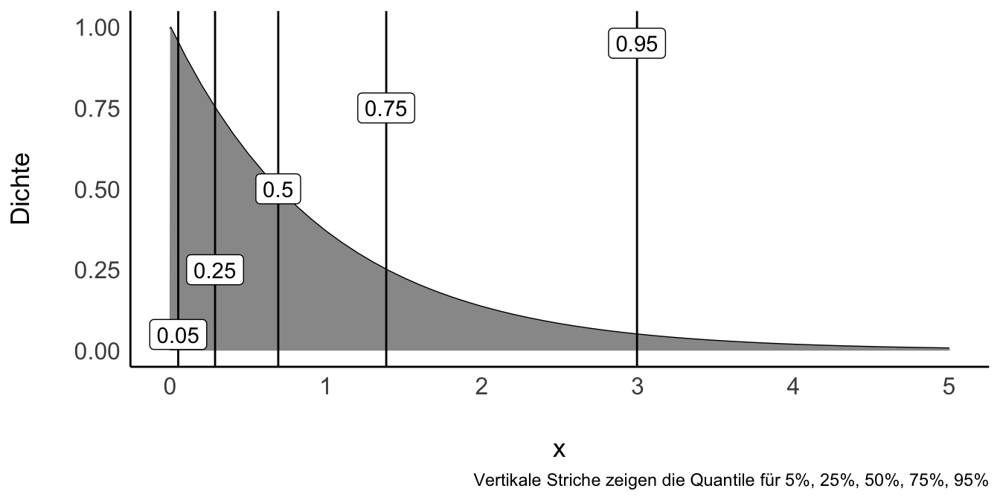
Für eine exponentialverteilte Variable \(X\) schreibt man auch:
\[X \sim \operatorname{Exp}(1)\]
Eine Verteilung dieser Form nennt man Exponentialverteilung.
- Eine Exponentialverteilung ist nur für positive Werte, \(x>0\), definiert.
- Steigt X um eine Einheit, so ändert sich Y um einen konstanten Faktor.
- Sie hat nur einen Parameter, genannt Rate oder \(\lambda\) (“lambda”).
- \(\frac{1}{\lambda}\) gibt gleichzeitig Mittelwert und Streuung (“Gestrecktheit”) der Verteilung an.
- Je größer die Rate \(\lambda\), desto kleiner die Streuung und der Mittelwert der Verteilung.
- Je größer \(1/\lambda\), desto größer die Streuung und der Mittelwert der Verteilung.
Ohne auf die mathematischen Eigenschaften im Detail einzugehen, halten wir fest, dass der Graph dieser Funktion gut zu unseren Plänen passt.
8.3.2 Visualisierung verschiedener Exponentialverteilungen
Schauen wir uns einige Beispiele von Exponentialverteilungen an. Unterschiede in Exponentialverteilungen sind rein auf Unterschiede in \(\lambda\) (lambda) zurückzuführen, s. Abbildung 8.3.
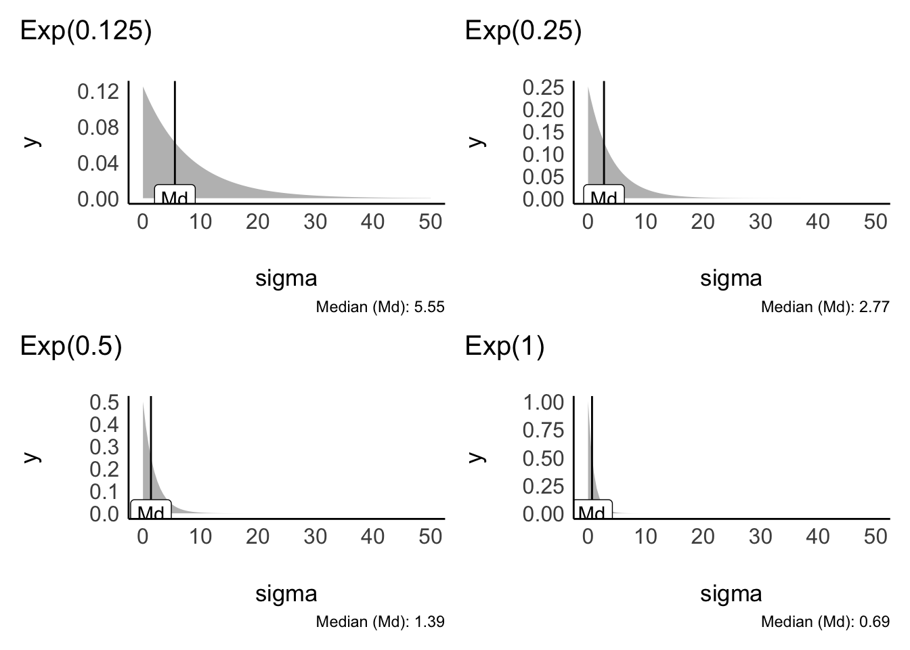
Wie wir in Abbildung 8.3 sehen, könnte eine Exponentialverteilung mit \(\lambda=1/8\) grob passen.
Die “richtigen” Priori-Verteilung zu finden, bzw. die richtigen Parameter für die Priori-Verteilung zu wählen, ist nicht möglichn, denn es gibt nicht die eine, richtige Priori-Verteilung. Eine “gut passende” Verteilung zu finden, ist häufig nicht leicht. Gut beraten ist man mit der Regel, im Zweifel lieber eine liberale Verteilung zu wählen, die einen breiteren Raum an möglichen Werten zulässt. Allerdings sollte man nicht das Baby mit dem Wasser auskippen und extreme Werte, wie mehrere Meter Körpergröße Streuung, erlauben.
Man kann sich die Quantile der Exponentialverteilung mit qexp ausgeben lassen, wobei mit man p den Wert der Verteilungsfunktion angibt, für den man das Quantil haben möchte. Mit rate wird \(\lambda\) bezeichnet.
Dieser Aufruf zum Beispiel:
Code
qexp(p = .5, rate = 1/8)
## [1] 5.545177Gibt uns die Verteilungsfunktion einer Exponentialverteilung mit Rate (\(\lambda\)) von 1/8 zurück, ca. 5.5.
Die Grenzen der inneren 95% dieser Verteilung kann man sich so ausgeben lassen:
Diese Grenzen scheinen hinreichend weit, das wir noch von den Daten überrascht werden können, aber schmal genug, um unsinnige Werte auszuschließen. Ein guter Start! Weiter geht’s!
8.4 Unser Gauss-Modell der !Kung
8.4.1 Modelldefinition
Wir nehmen an, dass \(\mu\) und \(h_i\) normalverteilt sind und \(\sigma\) exponentialverteilt (da notwendig positiv) ist:
Likelihood: \(h_i \sim \mathcal{N}(\mu, \sigma)\)
Prior für \(\mu\): \(\mu \sim \mathcal{N}(178, 20)\)
Prior für \(\sigma\): \(\sigma \sim \mathcal{E}(0, 0.1)\)
Daher: \(95\%KI( \mu): 178 \pm 40\)
In Abbildung 8.4 sind unsere Priori-Verteilungen visualisiert.
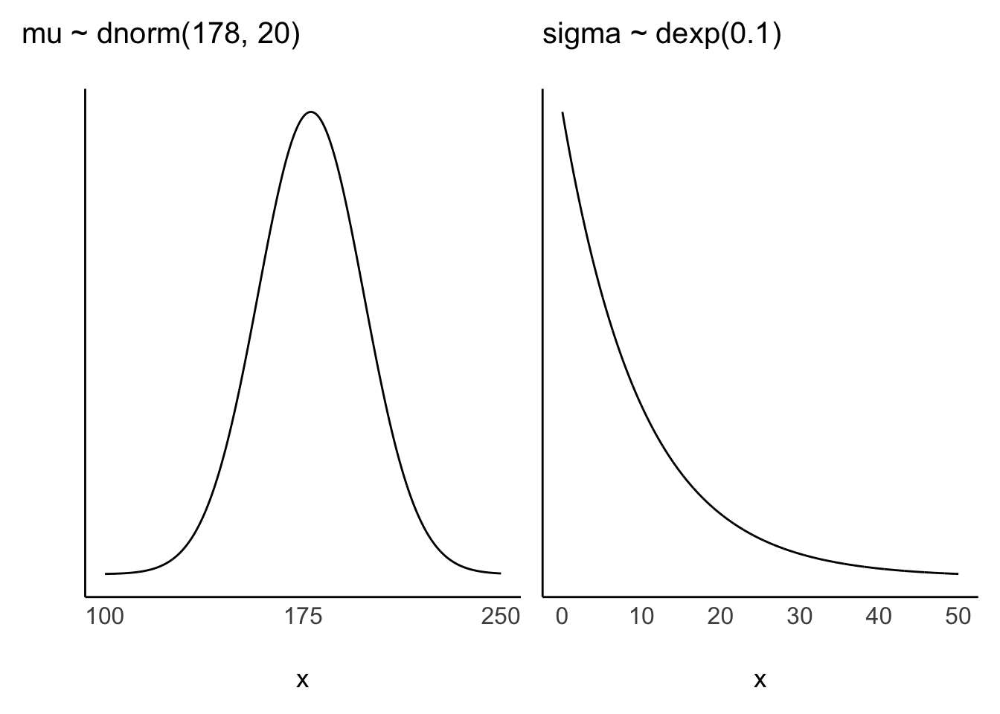
8.4.2 Priori gewichtet mit Likelihood ergibt Posteriori
Zu Erinnerung: Die Posteriori-Wahrscheinlichkeit ist das Ergebnis von Priori-Wahrscheinlichkeit und Likelihood.
Die Körpergrößen der einzelnen Personen \(h_i\) nehmen wir als normalverteilt an mit Mittelwert \(\mu\) und Streuung \(\sigma\):
\[h_i \sim \mathcal{N}(\color{blue}{\mu},\color{green}{\sigma})\]
8.4.3 Prioris
Mittelwert der Größe ist normalverteilt mit \(\mu=178\) und \(\sigma=20\):
\[\color{blue}{\mu \sim \mathcal{N}(178, 20)}\]
Die Streuung \(\sigma\) der Größen ist exponentialverteil mit \(\lambda = 1/8\).
\[\color{green}{\sigma \sim \mathcal{E}(1/8)}\]
8.4.4 Fertig!
Jetzt haben wir unser Modell definiert!
Weil es so schön ist, schreiben wir es hier noch einmal auf, Gleichung 8.1.
\[ \begin{aligned} h_i &\sim \mathcal{N}(\mu, \sigma) \\ \mu &\sim \mathcal{N}(178, 20) \\ \sigma &\sim \mathcal{E}(1/8) \end{aligned} \tag{8.1}\]
Zur Berechnung nutzen wir jetzt dieses Mal aber nicht die Gittermethode (Bayes-Box), sondern lassen R die Arbeit verrichten.
Da gibt es einen neuen Golem, ziemlich kräftig der Bursche, der soll die Arbeit für uns tun. Der Golem hört auf den Namen rstanarm4.
8.5 Zufällige Motivationsseite
8.6 Posteriori-Verteilung des Größen-Modells, m41
Okay, Golem, an die Arbeit! Berechne uns das Kung-Modell! Nennen wir das Modell m415.
Das Argument refresh = 0 verhindert, dass die Details zum Ziehen der Stichproben am Bildschirm ausgegeben werden. Ich finde diese Ausgabe meist nicht informativ, so dass ich sie lieber unterdrücke.
stan_glm ist eine Funktion, mit der man Regressionsmodelle berechnen kann. Nun haben wir in diesem Fall kein “richtiges” Regressionsmodell. Man könnte sagen, wir haben eine AV (Körpergröße), aber keine UV (keine Prädiktoren). Glücklicherweise können wir auch solche “armen” Regressionsmodelle formulieren:
av ~ 1 bzw. in unserem Beispiel height ~ 1 bedeutet, dass man nur die Verteilung der AV berechnen möchte, aber keine Prädiktoren hat (das soll die 1 symbolisieren).
Für das Modell m41 haben wir keine Prioris spezifiziert. Wir greifen damit auf die Voreinstellung der Prioris von rstanarm zurück. Das ist ok, aber wenn Sie Vorab-Wissen haben, sollten Sie das an rstanarm weitergeben, weil es ja schade wäre, wenn Sie Wissen haben, das von Ihrem Modell nicht genutzt wird.
Plotten wir mal die Posteriori-Verteilung von m41, s. Abbildung 8.5.
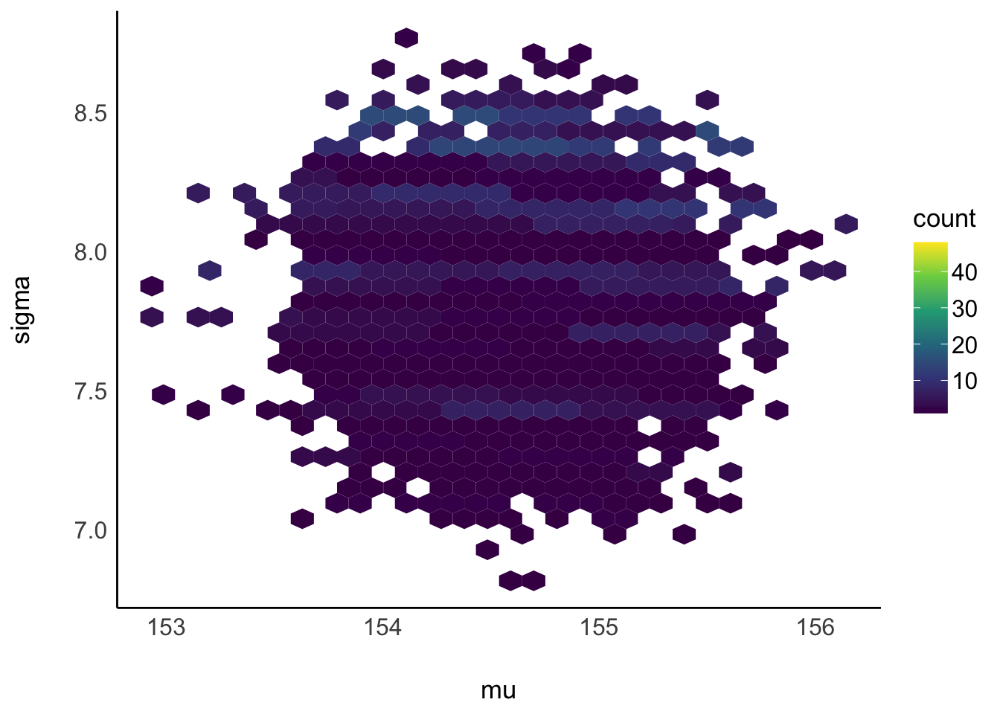
Da das Modell zwei Parameter hat, können wir auch beide gleichzeitig plotten. Wie man sieht, sind die beiden Parameter unkorreliert. In anderen Modellen können die Parameter korreliert sein.
Abbildung 8.5 erlaubt uns, für jede Kombination von Mittelwert und Streuung zu fragen, wie wahrscheinlich diese bestimmte Kombination ist.
Hier sind noch zwei andere Visualisierungen der Post-Verteilung von m42, s. Abbildung 8.6.
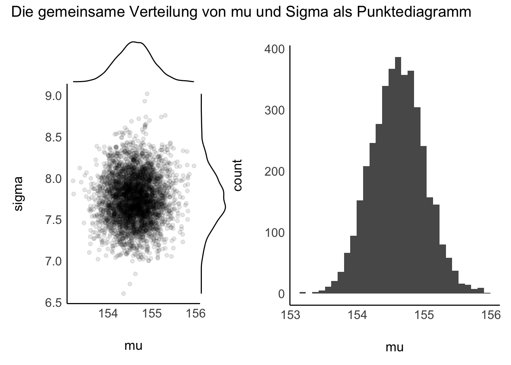
Natürlich können wir auch nur einen Parameter plotten.
Fassen wir die Ergebnisse dieses Modells zusammen:
Wir bekommen eine Wahrscheinlichkeitsverteilung für \(\mu\) und eine für \(\sigma\) (bzw. eine zweidimensionale Verteilung, für die \(\mu,\sigma\)-Paare).
Trotz des eher vagen Priors ist die Streuung Posteriori-Werte für \(\mu\) und \(\sigma\) klein: Die große Stichprobe hat die Priori-Werte überstimmt.
Ziehen wir Stichproben aus der Posteriori-Verteilung, so können wir interessante Fragen stellen.
8.6.1 Hallo, Posteriori-Verteilung
… wir hätten da mal ein paar Fragen an Sie. 🕵
- Mit welcher Wahrscheinlichkeit ist die mittlere !Kung-Person größer als 1,55m?
- Welche mittlere Körpergröße wird mit 95% Wahrscheinlichkeit nicht überschritten, laut dem Modell?
- In welchem 90%-PI liegt \(\mu\) vermutlich?
- Mit welcher Unsicherheit ist die Schätzung der mittleren Körpergröße behaftet?
- Was ist der mediane Schätzwert der mittleren Körpergröße, sozusagen der “Best Guess”?
Antworten folgen etwas weiter unten.
Abschließend, eigentlich nur Spielerei, noch eine andere Visualisierung der Post-Verteilung von \(\mu\) und von \(\sigma\), Abbildung 8.7.
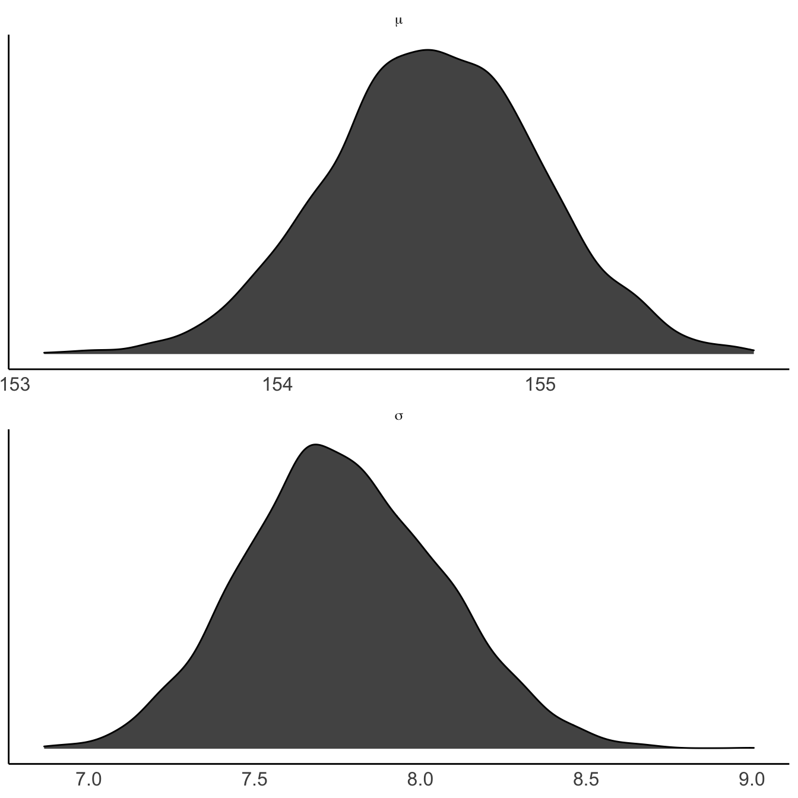
8.6.2 Posteriori-Stichproben mit stan_glm() berechnen
Mit stan_glm() können wir komfortabel die Posteriori-Verteilung berechnen. Die Gittermethode wird nicht verwendet, aber die Ergebnisse sind - in bestimmten Situationen - ähnlich. Es werden aber auch viele Stichproben simuliert (sog. MCMC-Methode). Gibt man keine Priori-Werte an, so greift die Funktion auf Standardwerte zurück.
Grob gesagt berechnen wir die Post-Verteilung mit stan_glm so:
Modelldefinition:
\(h_i \sim \mathcal{N}(\mu, \sigma)\), Likelihood
\(\mu \sim \mathcal{N}(155, 19)\), Prior zum Größenmittelwert
\(\sigma \sim \mathcal{E}(0.125)\), Prior zur Streuung der Größen
8.6.3 Ausgabe von stan_glm()
Wir können, wie wir es oben getan haben, uns die Stichproben der Post-Verteilung ausgeben lassen, und diese z.B. plotten.
Wir können es aber auch komfortabler haben … Mit dem Befehl parameters kann man sich die geschätzten Parameterwerte einfach ausgeben lassen.
Code
m41 <- stan_glm(height ~ 1, data = d2, refresh = 0) # aus Paket rstanarm
parameters(m41) # aus Paket `easystats`| Parameter | Median | 95% CI | pd | Rhat | ESS | Prior |
|---|---|---|---|---|---|---|
| (Intercept) | 154.61 | (153.79, 155.37) | 100% | 1.000 | 2868.00 | Normal (154.60 +- 19.36) |
Das Wesentliche: Unser Golem schätzt den Größenmittelwert der Kung auf ca. 155cm bzw. auf einen Bereich von etwa 153.7924606 bis 155.3701721 schätzt.
Informativ ist vielleicht noch, dass wir den Prior erfahren, der im Modell verwendet wurde. Dazu später mehr.
In dieser Ausgabe sind ein paar Angaben, die wir nicht verstehen, wie pd, Rhat und ESS. Kein Problem: Einfach ignorieren :-)
Wer Näheres wissen will, findet hier einen Anfang. Außerdem sei an McElreath (2020) und Gelman, Hill, und Vehtari (2021) verwiesen.
8.7 Wie tickt stan_glm()?

Hier ein paar Kernimnfos zu stan_glm:
-
Stan ist eine Software zur Berechnung von Bayesmodellen; das Paket
rstanarmstellt Stan für uns bereit. -
stan_glm()ist für die Berechnung von Regressionsmodellen ausgelegt. - Will man nur die Verteilung einer Variablen (wie
heights) schätzen, so hat man man … eine Regression ohne Prädiktor. - Eine Regression ohne Prädiktor schreibt man auf Errisch so:
y ~ 1. Die1steht also für die nicht vorhandene UV;ymeint die AV (height). -
(Intercept)(Achsenabschnitt) gibt den Mittelwert an.
Mehr findet sich in der Dokumentation von RstanArm.
8.7.1 Schätzwerte zu den Modellparameter
Die Parameter eines Modells sind die Größen, für die wir eine Priori-Verteilung annehmen sowie einen Likelihood und dann aus den Daten schätzen. Ich sage schätzen um hervorzuheben, dass wir die wahren Werte nicht kennen, sondern nur eine Vermutung haben, unsere Ungewissheit vorab also (wie immer) in der Priori-Verteilung festnageln und unsere Ungewissheit nach Kenntnis der Daten in der Posteriori-Verteilung quantifizieren.
Wie gerade gesehen, lassen sich die Modellparameter (bzw. genauer gesagt deren Schätzungen) einfach mit parameters(modellname) auslesen.
8.7.2 Stichproben aus der Posteriori-Verteilung ziehen
Wie wir es vom Globusversuch gewohnt sind, können wir aber auch Stichproben aus der Post-Verteilung ziehen.
Hier die ersten paar Zeilen von post_m41:
| (Intercept) | sigma |
|---|---|
| 154.7289 | 7.570879 |
| 154.4062 | 7.790845 |
| 155.0376 | 7.896776 |
| 154.6066 | 7.566842 |
| 155.0892 | 7.360862 |
| 154.9779 | 7.383356 |
In einer Regression ohne Prädiktoren entspricht der Achsenabschnitt dem Mittelwert der AV, daher gibt uns die Spalte (Intercept) Aufschluss über unsere Schätzwerte zu \(\mu\) (der Körpergröße).
Beispiel 8.1 (Mit welcher Wahrscheinlichkeit ist \(\mu>155\)?)
Code
| mu > 155 | n | prop |
|---|---|---|
| FALSE | 3369 | 0.84225 |
| TRUE | 631 | 0.15775 |
Die Wahrscheinlichkeit ist nicht hoch, aber nicht auszuschließen, dass die Kung im Schnitt größer als 155 cm sind. Wahrscheinlicher ist jedoch, dass sie kleiner als 155 cm sind.
Beispiel 8.2 (Mit welcher Wahrscheinlichkeit ist \(\mu>165\)?)
Code
| mu > 165 | n | prop |
|---|---|---|
| FALSE | 4000 | 1 |
Oh, diese Hypothese können wir mit an Sicherheit grenzender Wahrscheinlichkeit ausschließen. Aber Achtung: Das war eine Kleine-Welt-Aussage! Die Wahrscheinlichkeit, die Hypothese \(\mu > 165\) auszuschließen ist nur dann hoch, wenn das Modell gilt! Wenn also der Golem keinen Mist gebaut hat. Und sind wir mal ehrlich, der Golem tut, was sein:e Herr:in und Meister:in ihm befiehlt. Letztlich liegt es an uns, den Golem auf Spur zu kriegen.
Beispiel 8.3 (Welche mittlere Körpergröße wird mit 95% Wahrscheinlichkeit nicht überschritten, laut dem Modell m41?)
Beispiel 8.4 (In welchem 90%-PI liegt \(\mu\) vermutlich?)
Code
post_m41 %>%
eti()| Parameter | CI | CI_low | CI_high |
|---|---|---|---|
| mu | 0.95 | 153.792461 | 155.370172 |
| sigma | 0.95 | 7.223649 | 8.366473 |
Ein ETI ist synonym zu PI.
Beispiel 8.5 (Mit welcher Unsicherheit ist die Schätzung der mittleren Körpergröße behaftet?)
Code
m41 %>%
parameters()| Parameter | Median | 95% CI | pd | Rhat | ESS | Prior |
|---|---|---|---|---|---|---|
| (Intercept) | 154.61 | (153.79, 155.37) | 100% | 1.000 | 2868.00 | Normal (154.60 +- 19.36) |
Seeing is believing, Abbildung 8.8.
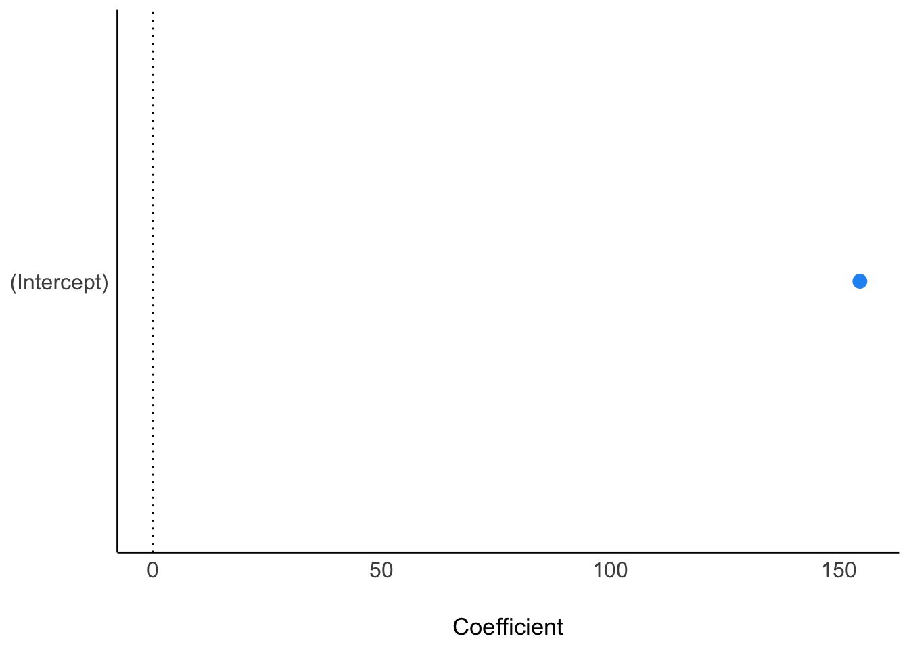
Das Modell ist sich recht sicher: die Ungewissheit der mittleren Körpergröße liegt bei nicht viel mehr als einem Zentimeter (95%-CI).
Beispiel 8.6 (Was ist der mediane Schätzwert der mittleren Körpergröße, sozusagen der “Best Guess”?) parameters(m41) hat uns die Antwort schon gegeben: Ca. 155 cm.
🏋️ Ähnliche Fragen bleiben als Übung für die Lesis. 🤓
8.7.3 Standard-Prioriwerte bei stan_glm()
stan_glm() nimmt für uns Priori-Wert an. Welche das sind, kann man sich so anzeigen lassen:
Code
prior_summary(m41)
## Priors for model 'm41'
## ------
## Intercept (after predictors centered)
## Specified prior:
## ~ normal(location = 155, scale = 2.5)
## Adjusted prior:
## ~ normal(location = 155, scale = 19)
##
## Auxiliary (sigma)
## Specified prior:
## ~ exponential(rate = 1)
## Adjusted prior:
## ~ exponential(rate = 0.13)
## ------
## See help('prior_summary.stanreg') for more detailsstan_glm() verwendet (in der Voreinstellung) schwach informative Priori-Werte, die nur wenig Vorabwissen in das Modell geben. Es werden dafür die Stichproben-Daten als Priori-Daten verwendet: Mittelwerte und Streuungen der AV werden als Grundlage für die Priori-Verteilungen herangezogen. Strenggenommen ist das nicht “pures Bayes”, weil die Priori-Werte ja vorab, also vor Kenntnis der Daten bestimmt werden sollen. Bitte reichen Sie Ihre Beschwerden bei Andrew Gelman ein.
Man sollte diese Standardwerte als Minimalvorschlag sehen. Kennt man sich im Sachgebiet aus, kann man meist bessere Prioris finden. Die Voreinstellung ist nicht zwingend; andere Werte wären auch denkbar.
-
Intercept: \(\mu\), der Mittelwert der Verteilung \(Y\)- \(\mu \sim \mathcal{N}(\bar{Y}, sd(Y)\cdot 2.5)\)
- als Streuung von \(\mu\) wird die 2.5-fache Streuung der Stichprobe (für \(Y\)) angenommen.
-
Auxiliary (sigma): \(\sigma\), die Streuung der Verteilung \(Y\)- \(\sigma \sim \mathcal{E}(\lambda=1/sd(Y))\)
- als “Streuung”, d.h. \(\lambda\) von \(h_i\) wird \(\frac{1}{sd(Y)}\) angenommen.
Eine sinnvolle Strategie ist, einen Prior so zu wählen, dass man nicht übergewiss ist, also nicht zu sicher Dinge behauptet, die dann vielleicht doch passieren (also die Ungewissheit zu gering spezifiziert), andererseits sollte man extreme, unplausible Werte ausschließen.
Bei der Wahl der Prioris gibt es nicht die eine, richtige Wahl. Die beste Entscheidung ist auf transparente Art den Stand der Forschung einfließen zu lassen und eigene Entscheidungen zu begründen. Häufig sind mehrere Entscheidungen möglich. Möchte man lieber vorsichtig sein, weil man wenig über den Gegenstand weiß, dann könnte man z.B. auf die Voreinstellung von rstanarm vertrauen, die “schwachinformativ” ist, also nur wenig Priori-Information in das Modell einfließen lässt.
8.7.4 Wenn es schnell gehen muss
stan_glm() ist deutlich langsamer als z.B. der befreundete Golem lm(). Der Grund für Stans Langsamkeit ist, dass er viele Stichproben zieht, also viel zu zählen hat. Außerdem wiederholt er das Stichprobenziehen (im Standard) 4 Mal, damit sein Meister prüfen kann, ob er (Stan) die Arbeit auch immer richtig gemacht hat. Die Idee dabei ist, wenn alle vier Durchführungen (auch “Ketten” engl., chains) genannt, zum etwa gleichen Ergebnis kommen, dann wird schon alles mit rechten Dingen zugegangen sein. Weichen die Ergebnisse der 4 Ketten voneinander ab, so ist Stan ein Fehler unterlaufen, oder, irgendetwas ist “dumm gelaufen”. An dieser Stelle schauen wir uns die Ketten nicht näher an, aber es sei notiert, dass man die Anzahl der Ketten mit dem Argument chains steuern kann. Möchte man, dass Stan sich beeilt, so kann man chains = 1 setzen, das spart Zeit.
Code
m41a <- stan_glm(height ~ 1,
data = d2,
chains = 1, # nur 1 Kette, anstelle von 4 im Default, spart Zeit
refresh = 0)
parameters(m41a)
8.8 Modell m42: unsere Priori-Werte
Im Modell m41 haben wir auf die Priori-Werte der Voreinstellung von rstanarm vertraut. Jetzt lassen wir mal unsere eigenen Priori-Werte einfließen, in unserem zweiten Kung-Modell, m42.
8.8.1 m42
Dann lassen wir stan_glm() (Stan) unser zweites Modell berechnen.6 Dieses Mal geben wir die Priori-Werte explizit an, Tabelle 8.1.
Code
m42 <-
stan_glm(height ~ 1,
prior_intercept = normal(178, 20), # mu
prior_aux = exponential(0.125), # sigma
refresh = FALSE, # bitte nicht so viel Ausgabe drucken
data = d2)
parameters(m42)| Parameter | Median | 95% CI | pd | Rhat | ESS | Prior |
|---|---|---|---|---|---|---|
| (Intercept) | 154.62 | (153.83, 155.42) | 100% | 1.000 | 2482.00 | Normal (178 +- 20) |
Wir haben noch nicht alle Informationen kennengelernt, die in Tabelle 8.1 ausgegeben werden. Im Zweifel: Einfach ignorieren. Wichtige Fähigkeit im Studium. 🤓
Vergleichen Sie die Parameterwerte von m41 und m42! Was fällt Ihnen auf? Nichts? Gut! Tatsächlich liefern beide Modelle sehr ähnliche Parameterwerte. Die Prioriwerte waren nicht so wichtig, weil wir genug Daten haben. Hat man einigermaßen viele Daten, so fallen Prioriwerte nicht mehr ins Gewicht, zumindest wenn sie moderat gewählt waren.
8.8.2 Posteriori-Verteilung und Parameter plotten
Ein Vergleich mehrerer Priori-Werte wäre auch nützlich, um ein skeptisches Publikum von der Wahl (bzw. der Indifferenz) der gewählten Priori-Werte zu überzeugen.
8.9 Fazit
Wir haben die Posteriori-Verteilung für ein Gauss-Modell berechnet. Dabei hatten wir ein einfaches Modell mit metrischer Zielvariablen, ohne Prädiktoren, betrachtet. Die Zielvariable, Körpergröße (height), haben wir als normalverteilt mit den Parametern \(\mu\) und \(\sigma\) angenommen. Für \(\mu\) und \(\sigma\) haben wir jeweils keinen einzelnen (fixen) Wert angenommen, sondern eine Wahrscheinlichkeitsverteilung, der mit der Priori-Verteilung für \(\mu\) bzw. \(\sigma\) festgelegt ist.
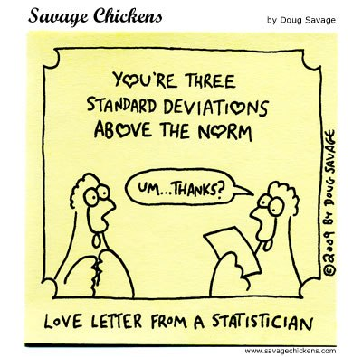
8.10 Wahl der Priori-Werte
🏎️ Dieser Abschnitt ist eine VERTIEFUNG und nicht prüfungsrelevant. 🏎
8.10.1 Welche Beobachtungen sind auf Basis unseres Modells zu erwarten?
💭 Was denkt der Golem (m41) apriori von der Größe der !Kung?
🦾 Ziehen wir mal ein paar Stichproben auf Basis des Modells. Voilà:
Code
p3 <-
sim %>%
ggplot(aes(x = height)) +
geom_density(fill = "grey33") +
scale_x_continuous(breaks = c(0, 178-3*height_sim_sd, 178, 178+3*height_sim_sd)) +
scale_y_continuous(NULL, breaks = NULL) +
labs(title = "height ~ dnorm(mu, sigma)",
caption = "X-Achse zeigt MW±3SD",
x = "Größe") +
theme(panel.grid = element_blank())
p3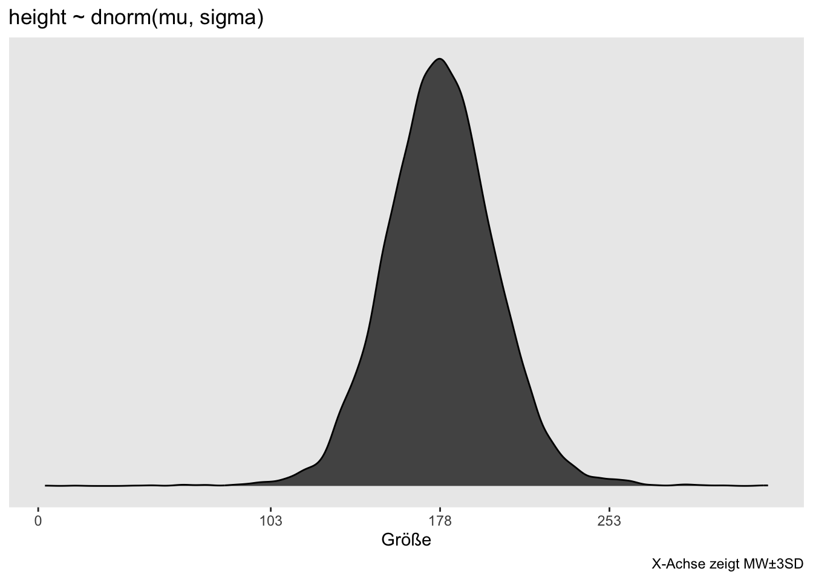
8.10.2 Priori-Werte prüfen mit der Priori-Prädiktiv-Verteilung
- Die Priori-Prädiktiv-Verteilung (
sim) simuliert Beobachtungen (nur) auf Basis der Priori-Annahmen: \(h_i \sim \mathcal{N}(\mu, \sigma),\) \(\mu \sim \mathcal{N}(178, 20),\) \(\sigma \sim \mathcal{E}(0.1)\) - So können wir prüfen, ob die Priori-Werte vernünftig sind.
Die Priori-Prädiktiv-Verteilung zeigt, dass unsere Priori-Werte ziemlich vage sind, also einen zu breiten Bereich an Größenwerten zulassen:
Code
p3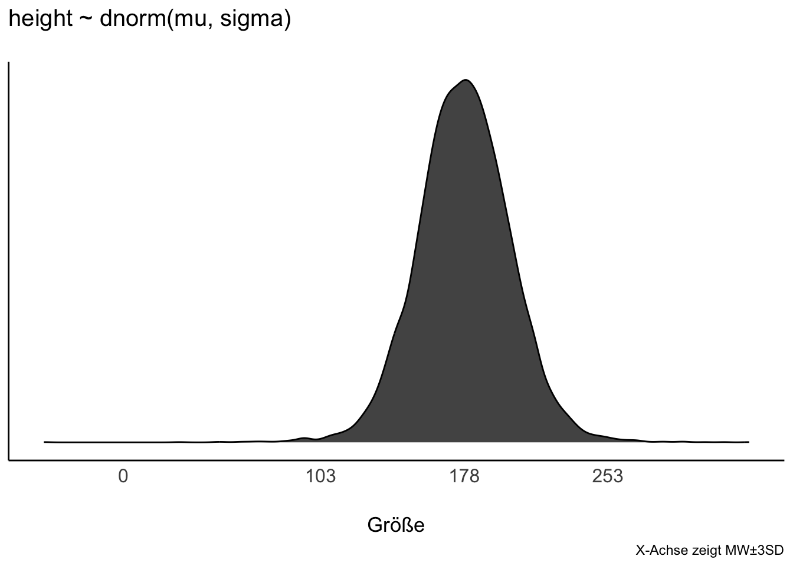
Anteil \(h_i > 200\):
Code
| height > 200 | n | prop |
|---|---|---|
| FALSE | 8327 | 0.8327 |
| TRUE | 1673 | 0.1673 |
🤔 Sehr große Buschleute? 17 Prozent sind größer als 2 Meter. Das ist diskutabel, muss aber nicht zwangsläufig ein schlechter Prior sein.
8.10.3 Vorhersagen der Priori-Werte
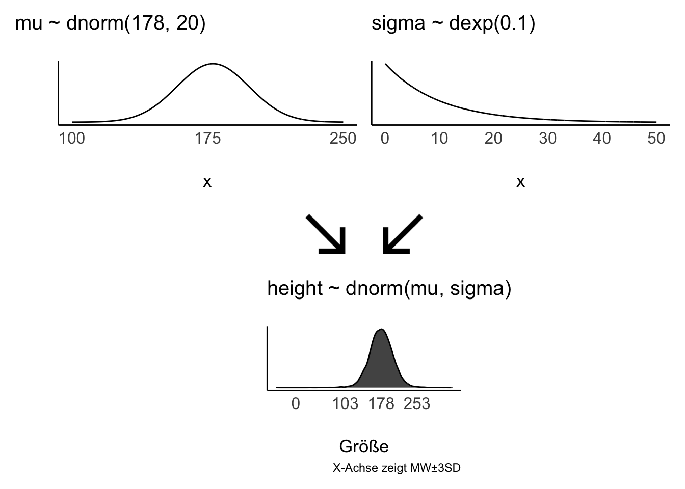
8.10.4 Extrem vage Priori-Verteilung für die Streuung?
\[\sigma \sim \mathcal{E}(\lambda=0.01)\]
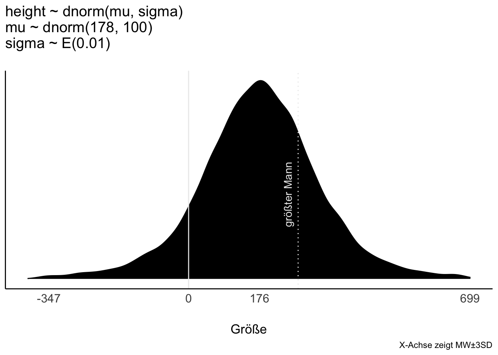
Die Streuung der Größen ist weit:
Code
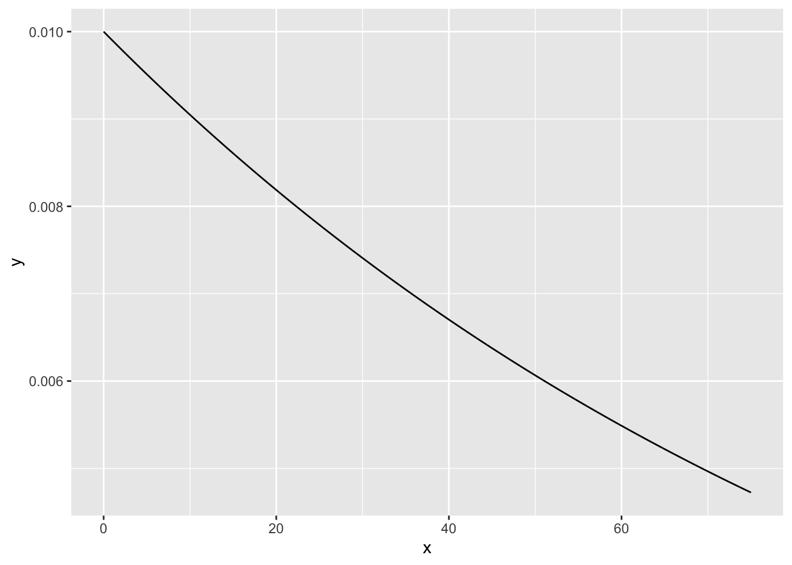
🤔 Das Modell geht apriori von ein paar Prozent Menschen mit negativer Größe aus. Ein Haufen Riesen 👹 werden auch erwartet.
🤯 Vage (flache, informationslose, “neutrale”, “objektive”) Priori-Werte machen oft keinen Sinn, weil sie extreme, unplausible Werte zulassen.
8.11 Fazit
Kontinuierliches Lernen ist der Schlüssel zum Erfolg.
8.12 Aufgaben
8.13 —
Darum machen wir hier ja die ganz Show!↩︎
Der Autor des zugrundeliegenden Fachbuchs, Richard McElreath gibt 178cm als seine Körpergröße an.↩︎
“Desiderata”↩︎
Hey, ich habe ihn diesne Namen nicht gegeben.↩︎
m wie Modell und 4, weil das Modell in Kapitel 4 von McElreath (2020) in ähnlicher Form berichtet wird, und 1 weil es unsere erste Variante dieses Modells ist.↩︎
Hey Stan, los, an die Arbeit!↩︎